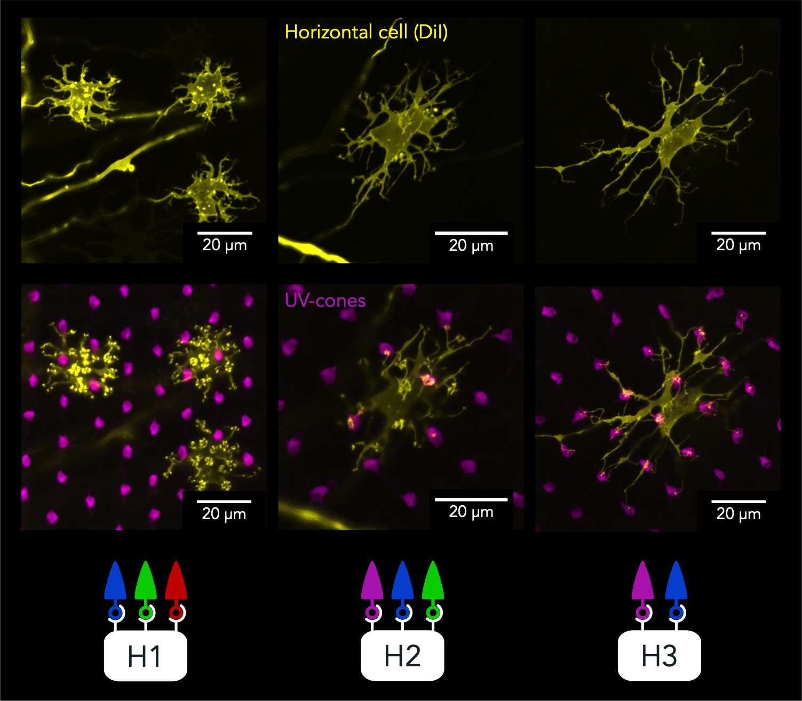

Visual Development Lab : Building and Rebuilding Misbuilding Retinal Circuits
Juan Angueyra
Zebrafish eye development
12.5 - 24.5 hpf

βactin:GFP-CAAX
sox10:memRFP
Courtesy of Kwan Lab: Bryan et al. (2020)
- Eye development is extremely complex
- → coordination
- → local and global interactions
- → dynamic


How are retinal cells subtypes generated during development?
CRISPR mutants: identify transcription factor that control cell identity

How are retinal cells subtypes properly wired?
Dime con quien andas y te diré quien eres
